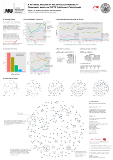

In the last decade, research activities in imprecise probability (IP), carried out by isolated groups scattered throughout the world, have been successively embedded into a number of formal structures: the biennial ISIPTA symposium starting in 1999, the SIPTA society founded in 2002, and the SIPTA summer schools since 2004. To reflect this period of adolescence in a data analytic way, a natural approach is to apply social network analysis. The R package ISIPTA provides infrastructure (data, demos, etc.) for a comprehensive analysis of the ISIPTA community.
The stable version of ISIPTA is available on CRAN; issue the following from within R to install it:
R> install.packages("ISIPTA")
The development version is available on GitHub.
R> library("ISIPTA")
R> find_author("Gero")
name nodeid
1 Gero Walter 91
Summarize your ISIPTA contributions author:
R> summarize_author("Gero Walter", show.papers = TRUE)
ISIPTA summary for Gero Walter (91)
Number of ...:
Papers 2
Coauthors 4
Unique coauthors 3
Conferences 2
Contributions:
1999 2001 2003 2005 2007 2009 2011
FALSE FALSE FALSE FALSE TRUE FALSE TRUE
Papers:
Linear Regression Analysis under Sets of Conjugate
Priors. Gero Walter (91), Thomas Augustin (260),
Annette Peters (19). 2007.
On Prior-Data Conflict in Predictive Bernoulli
Inferences. Gero Walter (91), Thomas Augustin (260),
Frank Coolen (80). 2011.
 The poster (abstract) is reproducible (now with data from ISIPTA '11) by the package demos:
R> demo(package = "ISIPTA") ## list all demos
R> demo("simple-summary") ## execute a demo